De-Time Method Gallery
Go to the end to download the full notebook, Python source, or zipped example.
This gallery follows the same pattern as a Sphinx-Gallery example page: short explanation, executable code blocks, printed output, figures, and download links. The examples use compact synthetic data so they run quickly in docs builds and local checkouts.
Regenerate this page and its assets with python scripts/generate_notebook_gallery.py.
Imports and synthetic data
import sys
import warnings
from pathlib import Path
import matplotlib.pyplot as plt
import numpy as np
import pandas as pd
from IPython.display import display
# Prefer the checkout when this notebook is run inside the repository.
repo_src = Path.cwd() / "src"
if (repo_src / "detime").exists():
sys.meta_path[:] = [
finder for finder in sys.meta_path
if finder.__class__.__module__ != "_de_time_editable"
]
sys.path.insert(0, str(repo_src))
from detime import DecompositionConfig, MethodRegistry, decompose
warnings.filterwarnings("ignore", category=FutureWarning)
plt.rcParams.update(
{
"figure.figsize": (7.6, 3.0),
"figure.dpi": 130,
"savefig.dpi": 220,
"axes.grid": False,
"axes.spines.top": False,
"axes.spines.right": False,
"font.size": 10,
}
)
rng = np.random.default_rng(42)
t = np.arange(96, dtype=float)
seasonal = np.sin(2.0 * np.pi * t / 12.0)
slow = 0.018 * t + 0.25 * np.sin(2.0 * np.pi * t / 48.0)
noise = 0.05 * rng.standard_normal(t.shape)
series = slow + seasonal + noise
panel = np.column_stack(
[
series,
0.8 * slow + np.sin(2.0 * np.pi * (t + 2.0) / 12.0) + 0.04 * rng.standard_normal(t.shape),
1.15 * slow + 0.7 * np.sin(2.0 * np.pi * (t + 4.0) / 12.0) + 0.04 * rng.standard_normal(t.shape),
]
)
CASES = {
"SSA": {"data": series, "config": {"method": "SSA", "params": {"window": 24, "rank": 6, "primary_period": 12}, "backend": "auto", "speed_mode": "exact"}},
"STD": {"data": series, "config": {"method": "STD", "params": {"period": 12}, "backend": "auto"}},
"STDR": {"data": series, "config": {"method": "STDR", "params": {"period": 12}, "backend": "auto"}},
"MSSA": {"data": panel, "config": {"method": "MSSA", "params": {"window": 24, "rank": 6, "primary_period": 12}, "backend": "python", "channel_names": ["a", "b", "c"]}},
"STL": {"data": series, "config": {"method": "STL", "params": {"period": 12}}},
"MSTL": {"data": series, "config": {"method": "MSTL", "params": {"periods": [12, 24]}}},
"ROBUST_STL": {"data": series, "config": {"method": "ROBUST_STL", "params": {"period": 12}}},
"EMD": {"data": series, "config": {"method": "EMD", "params": {"primary_period": 12, "n_imfs": 4}}},
"CEEMDAN": {"data": series, "config": {"method": "CEEMDAN", "params": {"primary_period": 12, "trials": 3, "noise_width": 0.03}}},
"VMD": {"data": series, "config": {"method": "VMD", "params": {"K": 4, "alpha": 300.0, "primary_period": 12}}},
"WAVELET": {"data": series, "config": {"method": "WAVELET", "params": {"wavelet": "db4", "level": 3}}},
"MA_BASELINE": {"data": series, "config": {"method": "MA_BASELINE", "params": {"trend_window": 7, "season_period": 12}}},
"MVMD": {"data": panel, "config": {"method": "MVMD", "params": {"K": 4, "alpha": 300.0, "primary_period": 12}, "channel_names": ["a", "b", "c"]}},
"MEMD": {"data": panel, "config": {"method": "MEMD", "params": {"primary_period": 12}, "channel_names": ["a", "b", "c"]}},
"GABOR_CLUSTER": {"data": series, "skip": "requires a trained GaborClusterModel or model_path plus the experimental clustering backend"},
}
GALLERY_RESULTS = []
def _plot_vector(values):
arr = np.asarray(values, dtype=float)
if arr.ndim == 2:
return arr[:, 0]
return arr
def _style_gallery_axis(ax, title):
ax.set_facecolor("#ffffff")
ax.grid(True, axis="y", alpha=0.22, color="#94a3b8", linewidth=0.8)
ax.grid(False, axis="x")
ax.spines["left"].set_color("#cbd5e1")
ax.spines["bottom"].set_color("#cbd5e1")
ax.tick_params(colors="#334155")
ax.set_title(title, loc="left", fontsize=12, fontweight="bold", color="#0f172a")
def run_gallery_case(name):
case = CASES[name]
metadata = MethodRegistry.get_metadata(name)
print(f"{name}: {metadata['summary']}")
if "skip" in case:
row = {
"method": name,
"status": "skipped",
"reason": case["skip"],
"input_mode": metadata["input_mode"],
"output_shape": "",
"residual_rmse": np.nan,
}
GALLERY_RESULTS.append(row)
display(pd.DataFrame([row]))
return
data = case["data"]
cfg = DecompositionConfig(**case["config"])
try:
result = decompose(data, cfg)
except Exception as exc:
row = {
"method": name,
"status": "skipped",
"reason": f"{type(exc).__name__}: {exc}",
"input_mode": metadata["input_mode"],
"output_shape": "",
"residual_rmse": np.nan,
}
GALLERY_RESULTS.append(row)
display(pd.DataFrame([row]))
return
original = _plot_vector(data)
trend = _plot_vector(result.trend)
season = _plot_vector(result.season)
residual = _plot_vector(result.residual)
reconstruction = trend + season + residual
rmse = float(np.sqrt(np.mean((original - reconstruction) ** 2)))
row = {
"method": name,
"status": "ran",
"reason": "",
"input_mode": metadata["input_mode"],
"output_shape": str(np.asarray(result.trend).shape),
"residual_rmse": round(rmse, 8),
}
GALLERY_RESULTS.append(row)
display(pd.DataFrame([row]))
fig, ax = plt.subplots(facecolor="#f8fafc")
ax.plot(original, label="input", color="#0f172a", linewidth=1.6)
ax.plot(trend, label="trend", color="#2563eb", linewidth=1.4)
ax.plot(season, label="season", color="#0f766e", linewidth=1.2)
ax.plot(residual, label="residual", color="#f97316", linewidth=1.0, alpha=0.85)
_style_gallery_axis(ax, f"{name} decomposition")
ax.set_xlabel("time step")
ax.legend(loc="upper right", ncol=2, fontsize=8, frameon=True, framealpha=0.92)
fig.tight_layout()
plt.show()
Univariate SSA
case = CASES["SSA"]
run_gallery_case("SSA")
Out:
SSA: Singular spectrum analysis for structured univariate decomposition. status: ran input mode: univariate trend shape: (96,) backend: native residual RMSE: 0.00000000
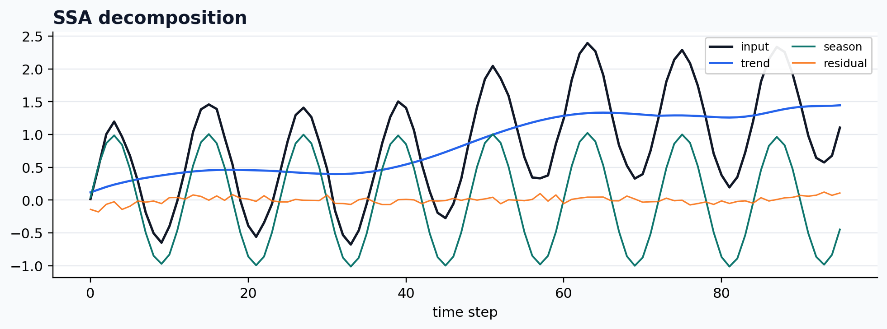
Seasonal-trend decomposition
case = CASES["STD"]
run_gallery_case("STD")
Out:
STD: Fast seasonal-trend decomposition with dispersion-aware diagnostics. status: ran input mode: channelwise trend shape: (96,) backend: native residual RMSE: 0.00000000
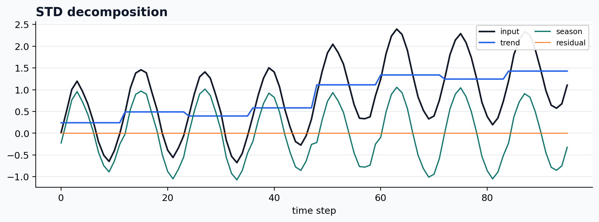
Robust seasonal-trend decomposition
case = CASES["STDR"]
run_gallery_case("STDR")
Out:
STDR: Robust seasonal-trend decomposition for noisier periodic signals. status: ran input mode: channelwise trend shape: (96,) backend: native residual RMSE: 0.00000000
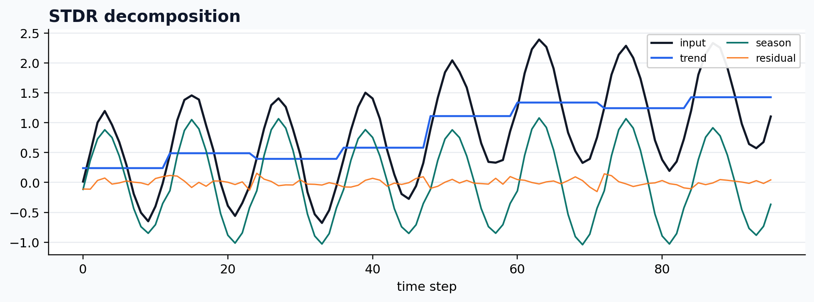
Multivariate SSA
case = CASES["MSSA"]
run_gallery_case("MSSA")
Out:
MSSA: Multivariate SSA for shared-structure decomposition across channels. status: ran input mode: multivariate trend shape: (96, 3) backend: python residual RMSE: 0.00000000
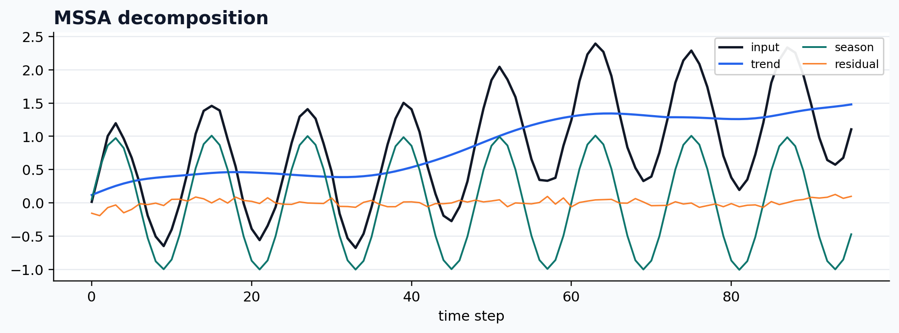
Statsmodels STL wrapper
case = CASES["STL"]
run_gallery_case("STL")
Out:
STL: Classical STL wrapped into the De-Time workflow contract. status: ran input mode: univariate trend shape: (96,) backend: python residual RMSE: 0.00000000
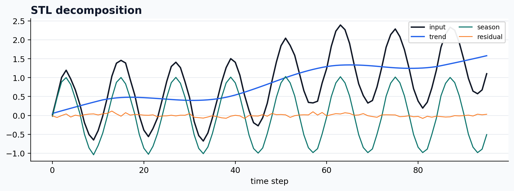
Statsmodels MSTL wrapper
case = CASES["MSTL"]
run_gallery_case("MSTL")
Out:
MSTL: Statsmodels MSTL wrapped into the De-Time workflow surface. status: ran input mode: univariate trend shape: (96,) backend: python residual RMSE: 0.00000000
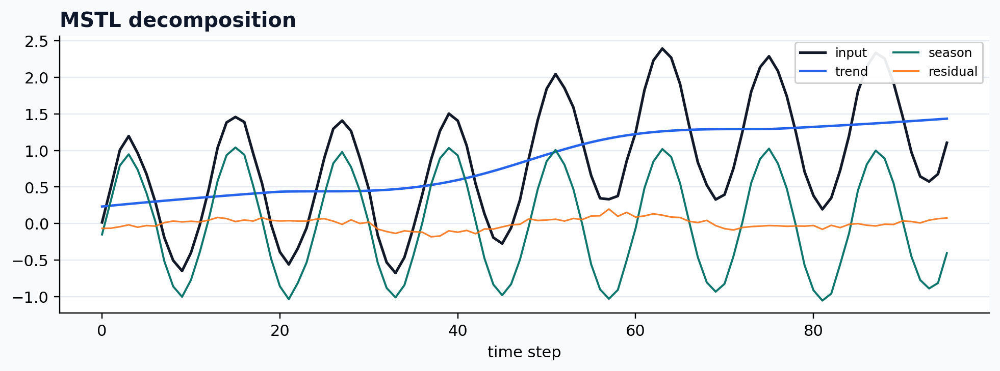
Robust STL wrapper
case = CASES["ROBUST_STL"]
run_gallery_case("ROBUST_STL")
Out:
ROBUST_STL: Robust STL-style decomposition wrapped for reproducible workflows. status: ran input mode: univariate trend shape: (96,) backend: python residual RMSE: 0.00000000
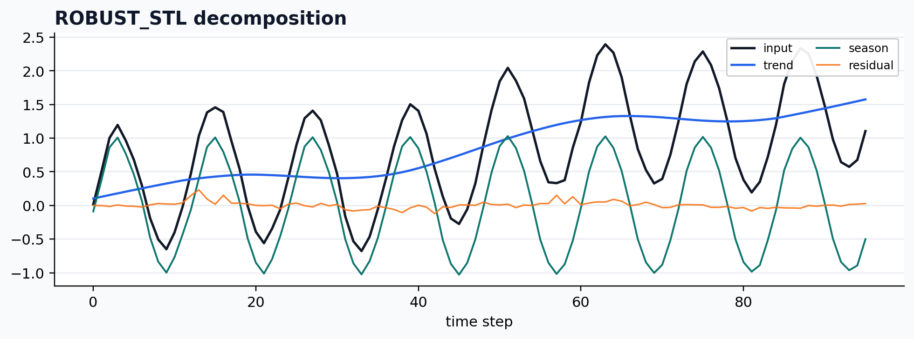
Empirical mode decomposition
case = CASES["EMD"]
run_gallery_case("EMD")
Out:
EMD: Empirical mode decomposition under the De-Time result contract. status: ran input mode: univariate trend shape: (96,) backend: python residual RMSE: 0.00000000
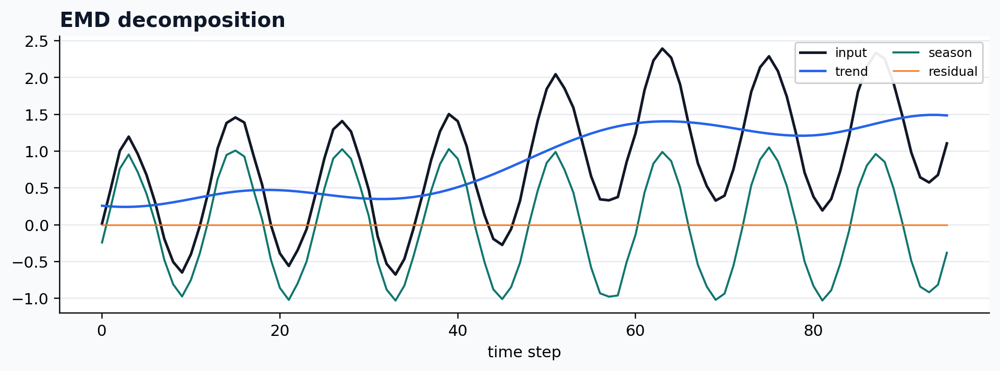
Noise-assisted EMD
case = CASES["CEEMDAN"]
run_gallery_case("CEEMDAN")
Out:
CEEMDAN: Noise-assisted EMD variant for more stable IMF extraction. status: ran input mode: univariate trend shape: (96,) backend: python residual RMSE: 0.00000000
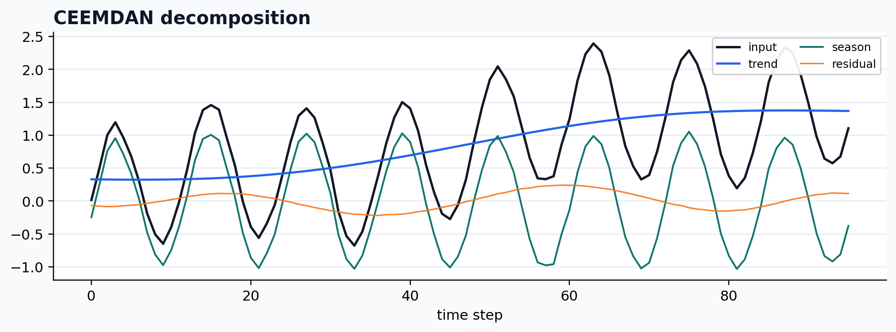
Variational mode decomposition
case = CASES["VMD"]
run_gallery_case("VMD")
Out:
VMD: Variational mode decomposition integrated into the common workflow layer. status: ran input mode: univariate trend shape: (96,) backend: python residual RMSE: 0.03421948
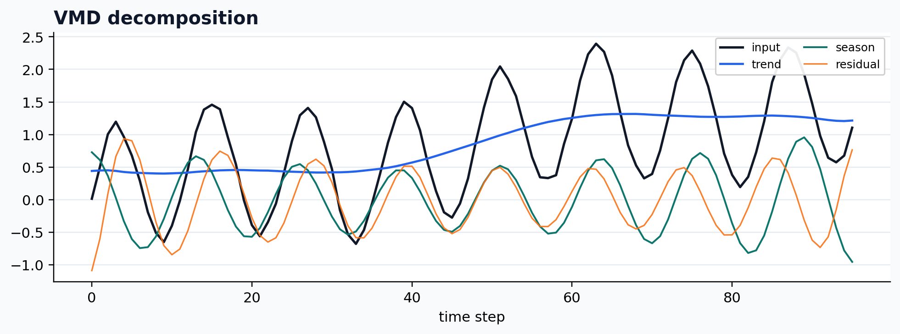
Wavelet decomposition
case = CASES["WAVELET"]
run_gallery_case("WAVELET")
Out:
WAVELET: Wavelet-based decomposition exposed through the common output contract. status: ran input mode: univariate trend shape: (96,) backend: python residual RMSE: 0.00000000
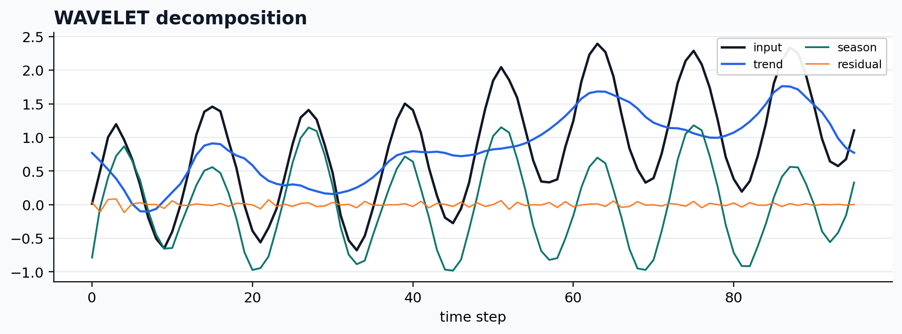
Moving-average baseline
case = CASES["MA_BASELINE"]
run_gallery_case("MA_BASELINE")
Out:
MA_BASELINE: Simple moving-average baseline for smoke tests and lightweight workflows. status: ran input mode: univariate trend shape: (96,) backend: python residual RMSE: 0.00000000
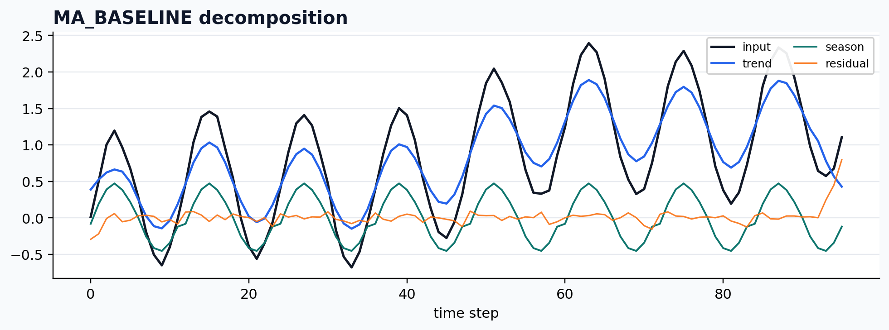
Optional multivariate VMD backend
case = CASES["MVMD"]
run_gallery_case("MVMD")
Out:
MVMD: Optional multivariate VMD backend for shared frequency structure. status: ran input mode: multivariate trend shape: (96, 3) backend: python residual RMSE: 0.08323657
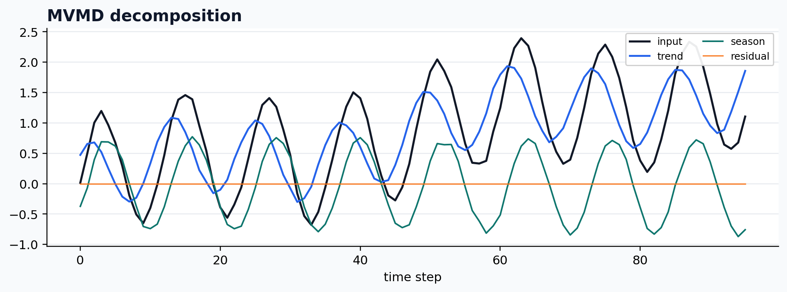
Optional multivariate EMD backend
case = CASES["MEMD"]
run_gallery_case("MEMD")
Out:
MEMD: Optional multivariate EMD backend for shared oscillatory structure. status: ran input mode: multivariate trend shape: (96, 3) backend: python residual RMSE: 0.00000000
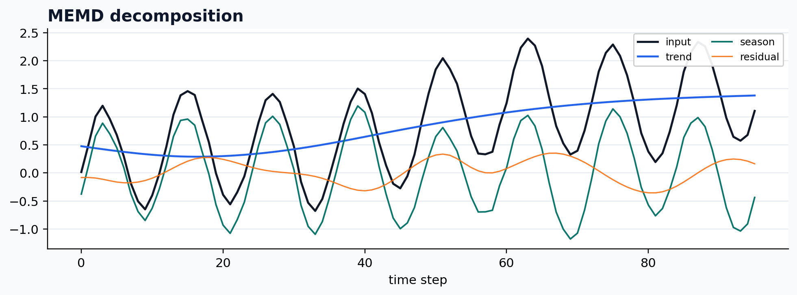
Experimental Gabor clustering path
case = CASES["GABOR_CLUSTER"]
print(case["skip"])
Out:
requires a trained GaborClusterModel or model_path plus the experimental clustering backend
Summary
| Method | Status | Input mode | Trend shape | Residual RMSE |
|---|---|---|---|---|
SSA |
ran | univariate |
(96,) |
0.00000000 |
STD |
ran | channelwise |
(96,) |
0.00000000 |
STDR |
ran | channelwise |
(96,) |
0.00000000 |
MSSA |
ran | multivariate |
(96, 3) |
0.00000000 |
STL |
ran | univariate |
(96,) |
0.00000000 |
MSTL |
ran | univariate |
(96,) |
0.00000000 |
ROBUST_STL |
ran | univariate |
(96,) |
0.00000000 |
EMD |
ran | univariate |
(96,) |
0.00000000 |
CEEMDAN |
ran | univariate |
(96,) |
0.00000000 |
VMD |
ran | univariate |
(96,) |
0.03421948 |
WAVELET |
ran | univariate |
(96,) |
0.00000000 |
MA_BASELINE |
ran | univariate |
(96,) |
0.00000000 |
MVMD |
ran | multivariate |
(96, 3) |
0.08323657 |
MEMD |
ran | multivariate |
(96, 3) |
0.00000000 |
GABOR_CLUSTER |
skipped | univariate |
`` | n/a |
Total running time of the gallery script: 4.716 seconds.
Methods run: 14; skipped with explicit reason: 1.
Downloads
de_time_method_gallery.ipynb
Download Python source code: de_time_method_gallery.py
Download zipped example: de_time_method_gallery.zip
The GitHub-rendered notebook is also available at examples/notebooks/de_time_method_gallery.ipynb.